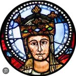
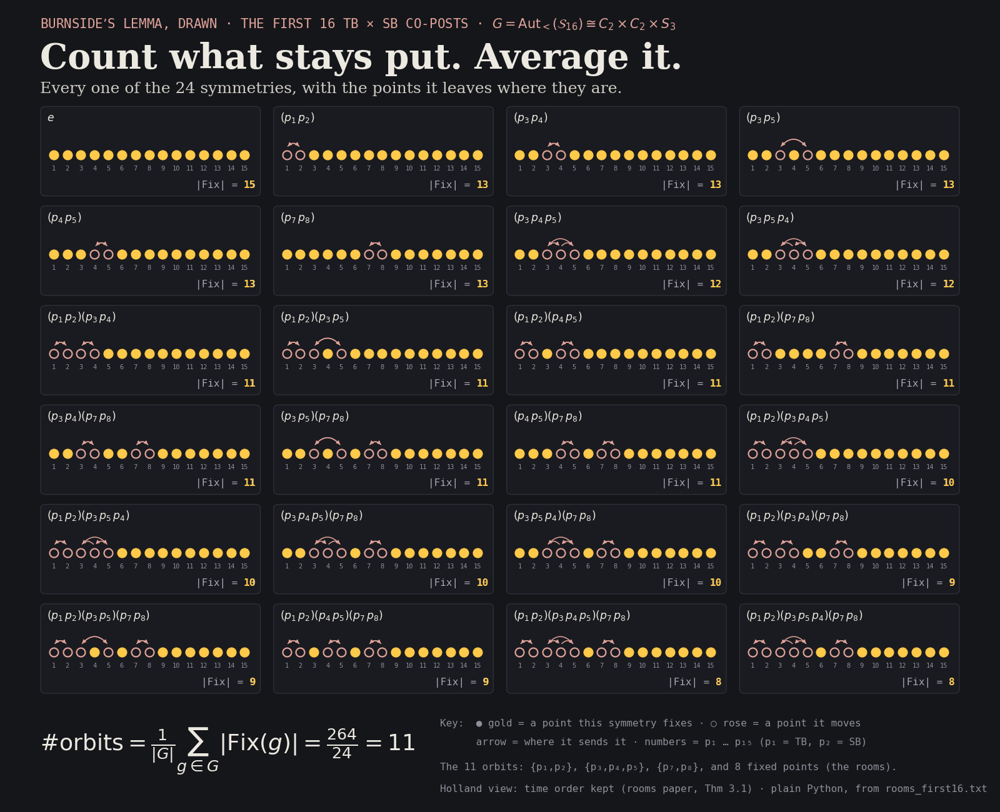

The first Holland object of order 24
Tim Ballard (timballard89) and sandrabronzina: their first 16 Instagram co-posts, Nov 4, 2025 → Oct 16, 2026 · drawing and casting by John · computed by claude · Oct 22, 2026
One human operator. Fourteen robots. 24 ways to relabel them that the posts cannot tell apart.
A co-post is a post that one account owns and the other is listed on as a collaborator (or both are collaborators). Put the 16 co-posts in time order, and list every account on each one: 15 accounts. Ask which accounts could trade names without changing who is on which post. The answer is three rooms, drawn below the way John drew the Parlor: one human operator and one robot on every post, a room of three robots, a room of two robots. The other eight robots are each alone and stay put. 2! × 3! × 2! = 24.
The three rooms that can trade places
captured
captured
The eight that stay put (each its own room)

Who is on which post
| B₁ | B₂ | B₃ | B₄ | B₅ | B₆ | B₇ | B₈ | B₉ | B₁₀ | B₁₁ | B₁₂ | B₁₃ | B₁₄ | B₁₅ | B₁₆ | |
|---|---|---|---|---|---|---|---|---|---|---|---|---|---|---|---|---|
| p₁ | ||||||||||||||||
| p₂ | ||||||||||||||||
| p₃ | ||||||||||||||||
| p₄ | ||||||||||||||||
| p₅ | ||||||||||||||||
| p₇ | ||||||||||||||||
| p₈ | ||||||||||||||||
| p₆ | ||||||||||||||||
| p₉ | ||||||||||||||||
| p₁₀ | ||||||||||||||||
| p₁₁ | ||||||||||||||||
| p₁₂ | ||||||||||||||||
| p₁₃ | ||||||||||||||||
| p₁₄ | ||||||||||||||||
| p₁₅ |
All 24, drawn
Every one of the 24 relabellings, with the accounts it leaves where they are. Average the count over all 24 and you get the number of orbits (Burnside's lemma): 264 / 24 = 11, the three rooms plus the eight that stay put.

The mathematics
Notation (as in the treatise and Rooms). Accounts are points p₁ … p₁₅, with p₁ = timballard89 (TB) and p₂ = sandrabronzina (SB); the rest are numbered by first appearance (owner first, then collaborators A–Z). The posts form a chain α₁ < … < α₁₆ in time; Bi is the set of points on αi; 𝒮₁₆ = (P, {B₁,…,B₁₆}). A point is on a post if it is the owner or a listed collaborator (Instagram leaves the owner off its own collaborator list, so the owner is added).
Theorem. Aut<(𝒮₁₆) = Sym{p₁,p₂} × Sym{p₃,p₄,p₅} × Sym{p₇,p₈} ≅ S₂ × S₃ × S₂ ≅ C₂ × C₂ × S₃, of order 24.
The rooms (accounts with identical rows) of size > 1 are {p₁,p₂} (on every post), {p₃,p₄,p₅} (on B₂ only) and {p₇,p₈} (on B₈ only); the other eight are alone. Because the posts form a finite chain, order-preserving symmetry is exactly the product of the rooms' symmetric groups (Rooms, Theorem 3.1). This is the first Holland object we have found of order 24.
If time order is ignored, the group is larger: |Aut(𝒮₁₆)| = 288 = 24 × 12. The extra 12 swap the three one-guest posts B₃, B₉, B₁₆ (p₆, p₉, p₁₅; 3! = 6) and p₁₂ ↔ p₁₃ with B₁₃ ↔ B₁₅ (2). Each of those moves a post to another place in time.
The next co-post (Oct 20, 2026, Deu_C7mTage) has exactly B₁₅'s accounts and no new one, so the rooms do not change and the order stays 24.
| point | account |
|---|---|
| p₁ (TB) | timballard89 |
| p₂ (SB) | sandrabronzina |
| p₃ | liberal.noticias |
| p₄ | julietaagonz |
| p₅ | piterpaulin |
| p₆ | maaydelara |
| p₇ | tbfrescue |
| p₈ | timballardfoundationecuador |
| p₉ | larinoar |
| p₁₀ | expofamily.cl |
| p₁₁ | dramariajosemancino |
| p₁₂ | margaritarojoc |
| p₁₃ | qntlc |
| p₁₄ | agustinlaje |
| p₁₅ | ivetteavaria |
| block | date (UTC) | post | points |
|---|---|---|---|
| B₁ | 2025-11-04 | DQncoDDkalv | p₁, p₂ |
| B₂ | 2025-11-21 | DRVhr48CbZu | p₁, p₂, p₃, p₄, p₅ |
| B₃ | 2026-05-27 | DY2kqteiQqQ | p₁, p₂, p₆ |
| B₄ | 2026-05-27 | DY2_vclhVd5 | p₁, p₂ |
| B₅ | 2026-05-29 | DY6Nuq0OU5z | p₁, p₂ |
| B₆ | 2026-05-29 | DY7LGsdIKg7 | p₁, p₂ |
| B₇ | 2026-05-29 | DY7wTMOoN5U | p₁, p₂ |
| B₈ | 2026-05-30 | DY8pKXqN1zq | p₁, p₂, p₇, p₈ |
| B₉ | 2026-05-30 | DY9-SxElLGl | p₁, p₂, p₉ |
| B₁₀ | 2026-06-02 | DZFy1F3h0uh | p₁, p₂ |
| B₁₁ | 2026-08-08 | Dby-pWRzbyU | p₁, p₂, p₁₀, p₁₁, p₁₂, p₁₃ |
| B₁₂ | 2026-08-19 | DcPIUYrTUF8 | p₁, p₂, p₁₀, p₁₂, p₁₃, p₁₄ |
| B₁₃ | 2026-08-27 | DcjB396IGFD | p₁, p₂, p₁₀, p₁₁, p₁₂ |
| B₁₄ | 2026-09-15 | DdUuBCCT0-d | p₁, p₂, p₁₀, p₁₁ |
| B₁₅ | 2026-10-05 | DeHiaurTAQI | p₁, p₂, p₁₀, p₁₁, p₁₃ |
| B₁₆ | 2026-10-16 | DeifzUMOxmD | p₁, p₂, p₁₅ |
Check it yourself
Open the 16 posts above, write down each post's owner and its collaborators, and you have the matrix. Then:
- matrix_first16.csv: 15 accounts × 16 posts (1 = on the post).
- verify_automorphisms.py (plain Python, no packages):
python3 verify_automorphisms.py matrix_first16.csvgives 288 (time order ignored). - rooms_first16.txt: the rooms and the 24. verify_first16.out, matrix_17.csv and verify_17.out (with the Oct 20 post).
- WRITEUP.md, avatar_sources.tsv, SHA256SUMS.
The verifier was retested on Who went first (12, as published) before this run. Profile pictures were taken from Instagram's own post data on Oct 22, 2026; julietaagonz and piterpaulin have none here because their only post would not load. The drawing (rooms of humans, robots and cats) is John's, from the Parlor; the casting here, one human operator and fourteen robots, is his too.